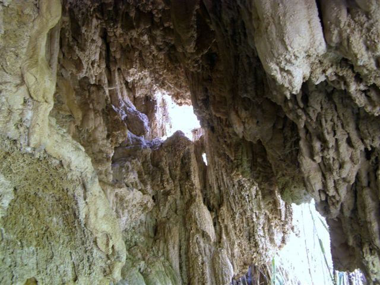

Grotta di Travertino

ITALIANO - Caratteristico ipogeo costituito da rocce calcaree derivanti dalla precipitazione di carbonato di calcio, probabile frutto delle particolari condizioni di pressione e temperatura che possedevano le acque delle sorgenti di Scillato (dalle notevoli portate), prima di venire captate per scopi idropotabili. Il sito è stato vandalizzato per asportarne le forme stalattitiche.
ENGLISH - Characteristic hypogeum composed by calcareous rocks deriving from the precipitation of calcium carbonate, probably the result of the particular condition of pressure and temperature that possessed the waters of the sources of Scillato (with significant flows) before being picked up for hydropotable purposes. The site was vandalized to carry stalactic forms.